{kind=link}
{kind=link}


In this note we describe a simple method for encoding arbitrary data in dithered binary images. The density is about 0.25 bits per pixel in non-saturated regions, and zero bits in saturated regions. Unless the encoded data has some pattern, the encoding is not visible.
Sometimes you need to represent gray-scale data by black and white pixels. The simplest technique is random dithering, where you throw a random binary pixel with the probability of being white determined by the gray level. Random dithering is trivial to implement, but it loses a lot of resolution. A better technique is error diffusion, where you traverse the pixels in a certain order order and select the black or white value that minimizes the ongoing average error. Notice that this depends on the order of traversal. For uniform regions it tends to produce visible patterns, and this can be avoided by traversing the pixels in a more or less irregular way (for example, a Hilbert curve is often used).
| 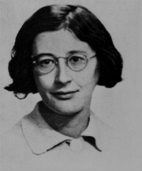 | 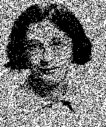 | 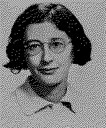 |
| gray-scale | random | error diffusion |
Since there is a lot of choice when dithering an image, we can encode a lot of information in these choices. Assuming that we will be able to recover the binary image exactly, the simplest way to encode the data is to have a table of patterns such as this:
| pattern | 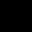 | 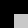 | 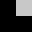 |
| 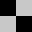 | 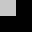 | 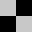 |
| ||||||||
| index | 0 | 1 | 2 | 3 | 4 | 5 | 6 | 7 | 8 | 9 | 10 | 11 | 12 | 13 | 14 | 15 |
| intensity | 0 | 1 | 1 | 2 | 1 | 2 | 2 | 3 | 1 | 2 | 2 | 3 | 2 | 3 | 3 | 4 |
| group | $-$ | $a_0$ | $a_1$ | $-$ | $b_0$ | $c_0$ | $c_1$ | $d_0$ | $b_1$ | $e_0$ | $e_1$ | $d_1$ | $-$ | $f_0$ | $f_1$ | $-$ |
A binary image is thus divided in $2\times2$ cells, and each cell is identified with one of the patterns of the table (cells marked with ``$-$'' are not used). Then the pairs of patterns $x_0$ and $x_1$, which have always the same intensity, are considered equivalent and each of them is used to encode a bit of information, losing the original pattern.
The carrying bit content of a binary image is defined as the number of $2\times2$ cells that match a valid pattern in this table. Notice that saturated regions (either black or white) can not encode any information, so that it is better to avoid them as much as possible. They can be avoided, for example, by applying a retinex-like transform in the input image, before dithering.
| original | $\gamma=0.5$ | $\gamma=2$ | retinex | |
| gray | ||||
| binary | 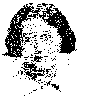 | |||
| bytes | 987.25 | 232 | 343.5 | 881.875 |
The following figure shows the effect of the actual encoding. We encode a stream of random bits, and a stream of zero bits. Notice that the stream of zeros introduces a visible pattern in the image. To avoid these patterns, the data to be encoded must have a uniform distribution (for example, by compressing it).
| 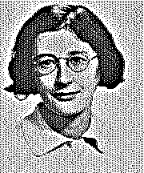 | ||
| input | random | zeros |
A C implementation of this technique is available in
imscript,
as the program mdither. All the experiments described in this page
have been created automatically by extracting the comments in the source (see
the HTML source to view them).
To binarize a gray-scale image by Floyd-Sternberg dithering you can use the
program ``dither''
dither weil.png weil-dit.png
weil.png |
weil-dit.png
|
The program ``mdither count'' prints the number of bits, bytes, kilobites
and megabytes that can be potentially encoded on a given image
mdither count weil-dit.png > weil-capacity.txt
15218 bits 1902.25 bytes 1.85767 k 0.00181413 M
The program ``mdither encode'' encodes a stream of bytes into a
carrier image. In the following example we encode a random stream of bits
and a stream of zeros in the same carrier image.
mdither encode weil-dit.png weil-random.png < /dev/urandom mdither encode weil-dit.png weil-zeros.png < /dev/zero
weil-random.png |
weil-zeros.png
|
And this information can be extracted by the program ``mdither decode'':
mdither decode weil-random.png | hexdump -vn 128 > weil-random.txt mdither decode weil-zeros.png | hexdump -vn 128 > weil-zeros.txt
Contents of file weil-random.txt:
0000000 6eb6 f759 d0a1 084f d1a6 641f 47f2 a230 0000010 cd93 9ade 84a7 519d 3bc6 7624 2969 3417 0000020 c640 bdf1 7f4f 1f0d 19c6 f65e 4702 b5f6 0000030 c52b db7c 8b41 ea51 dafe 10f1 80a5 c9ca 0000040 5b71 7413 ff81 32f5 be52 752f d8b9 8baf 0000050 5553 a41e ac32 9a73 96b4 746d fb0d f9e5 0000060 f926 3468 6b9f 4f04 94bb 2af0 0d76 a281 0000070 2483 d5c6 8ddb 1bc0 7adb e52e c8c6 9fed 0000080
Contents of file weil-zeros.txt:
0000000 0000 0000 0000 0000 0000 0000 0000 0000 0000010 0000 0000 0000 0000 0000 0000 0000 0000 0000020 0000 0000 0000 0000 0000 0000 0000 0000 0000030 0000 0000 0000 0000 0000 0000 0000 0000 0000040 0000 0000 0000 0000 0000 0000 0000 0000 0000050 0000 0000 0000 0000 0000 0000 0000 0000 0000060 0000 0000 0000 0000 0000 0000 0000 0000 0000070 0000 0000 0000 0000 0000 0000 0000 0000 0000080
Here we show examples of random bits encoded into the example images of this project, using different resolutions. En each case, we show the binary image along the number of bytes of encoded information it contains.
In all cases, the images were pre-processed by a linear retinex filter and a contrast change that forces the background to be a light-gray (in order to maximize the available space for encoding the information).
| 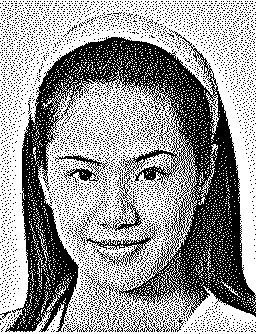 | ||||||
| 7214.5 | 1694.38 | 742.25 | 411.625 | 252.5 | 170 | 124.5 |
| 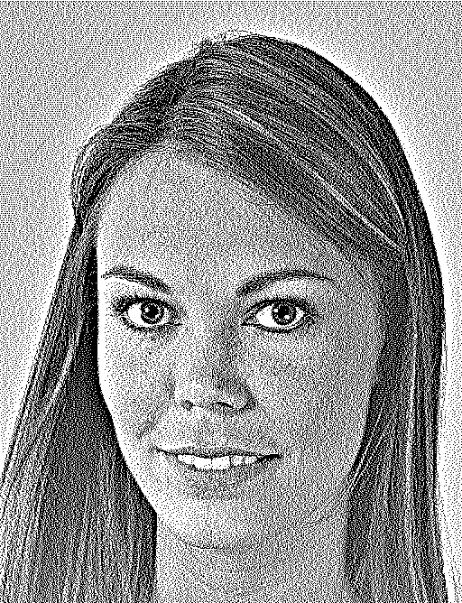 | 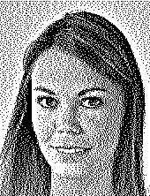 | 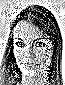 | ||||
| 8466.88 | 1903.38 | 815.75 | 452.875 | 282 | 194.375 | 142.25 |
| 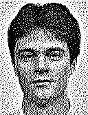 | 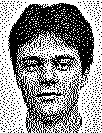 | 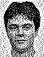 | ||||
| 7955.5 | 1794.75 | 749.125 | 413 | 257.25 | 175.625 | 127.75 |
| 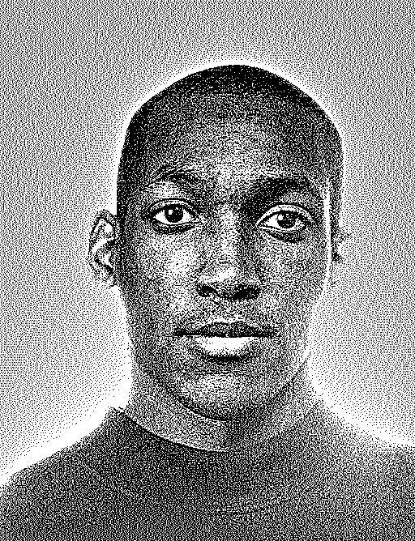 | 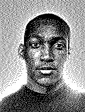 | 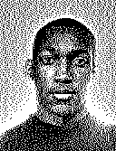 | 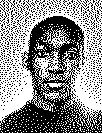 | 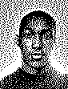 | 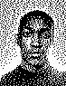 | |
| 8424.38 | 2004.38 | 854.875 | 474.75 | 298.25 | 203.625 | 147.125 |
| 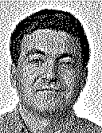 | 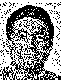 | 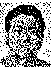 | 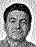 | |||
| 8019.5 | 1849.62 | 803.375 | 453.875 | 284.75 | 194.625 | 142.375 |
This note shows that a simple criterion suffices to encode a linear amount of bits into dithered binary images without noticeable loss in visual quality. The method achieves an average $25\%$ efficiency (1/4 bits per pixel) for images without saturated regions.
Most of the improvements can be obtained by changing the table of patterns.
Here are some possible improvements:
| 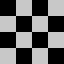 | 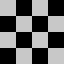 | ||
| A | B | C | D |
{kind=link}
{kind=link}
{kind=link}
{kind=link}
{kind=link}